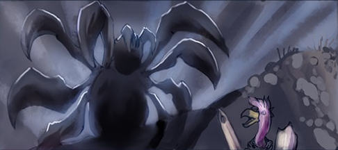
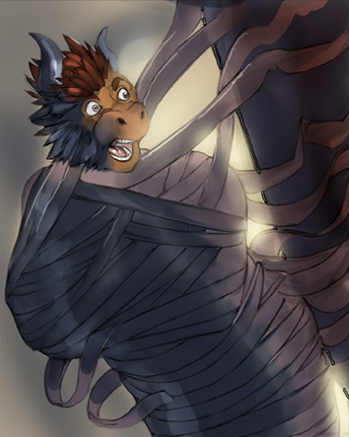
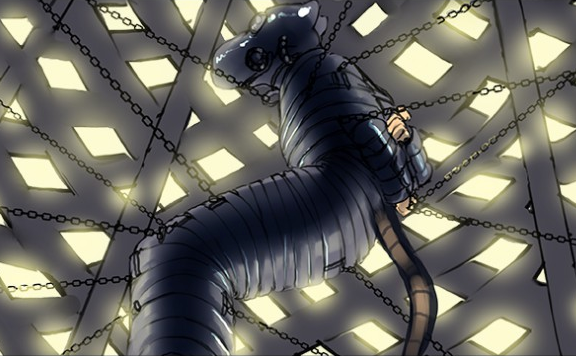
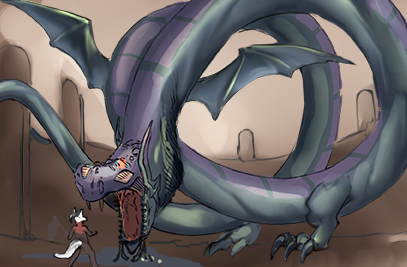
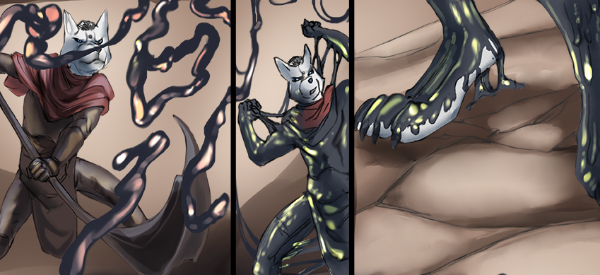
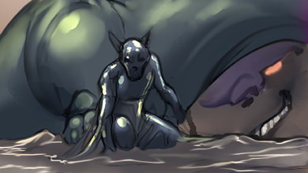
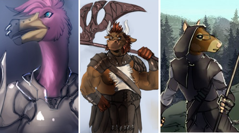
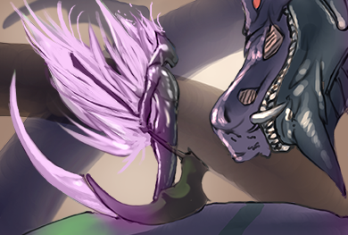
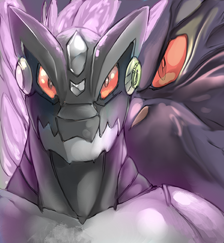

VAC Online: Player Decro
Written by TwistedSnakes
Illustrated by Croft
It was supposed to be a relaxing weekend of fun and games. Decro and his friends had pre-ordered "Virtual Adventure Cataclysm Online", or VAC online for short and were prepared to log on the moment the login servers opened.
Decro, a white arctic wolf, was seated in a specially-designed chair that was designed to provide a fully immersive experience as it closed around the player like a suit of armour. The VR headset was secured around his head and a spinal attachment was clamped to his back.
"You guys ready?" he asked his friends over the online voice chat.
"Sure!", "Duh," "You bet," came all the excited replies and the wolf grinned back.
"Let's go," he said as they all logged onto the servers.
Decro's first few moments in the game had been intense; not only were the graphics realistic but every single sensation was fed to his body as if he were truly experiencing them in real life. If not for the fantasy trees and shrubs, floating islands in the air, and the triple moon in the sky, he could've sworn that this was real life. He was standing on the top of a gentle hill among rolling fields of pastel green, blue, and pink grass.
"Whoa," he heard a voice behind him and he turned around to see a minotaur, "Decro, you look just like yourself!"
Decro chuckled at the statement; a weird one to make but very applicable all the same. He looked at his arms and body to see everything, from his fur to his hands, from his tail to his body markings, looking exactly as how it in real life.
"You're looking like yourself too, Zig," Decro grinned, "So does the sensory feedback work?" Without waiting for a response, he gave the minotaur a friendly punch to the side of his shoulder.
"Ouch! That actually hurt!" Zig held his shoulder in pain.
"Whoops, sorry" the wolf grinned sheepishly, but before he could react, the minotaur charged at him and tackled. "Revenge!" Zig yelled. The both of them rolled down the hill as the grass cushioned their descent until they were at the bottom.
"Are you kids done?" a female voice asked sarcastically. Decro immediately recognized her distinct voice: Jasmine the flamingo. She was standing beside Raxmei the rat, another friend.
"Just testing out the combat system," Zig grinned innocently before giving Decro a punch to his shoulder.
"Oww!" the wolf yelped.
"Now we're even," the minotaur buffed smugly.
Raimei exchanged glances of resignation with Jasmine as he shrugged. "Guess it'll take more than a fully-immersive RPG to change these two," he sighed. The grin plastered on his face, however, gave him away.
A soft jingle indicated a message and the words "Tutorial - Stage 1" appeared in front of each of them like a holographic 3D display. Wooden swords appeared in their hands and goblins rose out of the ground around them.
"Huh, guess they really throw you right into the game eh?" Zig nudged Decro.
"Just the way I like it," the wolf pulled back his sword as he charged for the nearest goblin.
After the fight, the tutorial system showed them the ropes: how to use their inventory, consume potion, upgrade weapons, and so on. They even met up with other players on the server and made some new friends.
"This is amazing," Decro muttered to himself, fully in awe of everything that he had seen in the game.
He would soon take those words back.
After the entire day of combat and sidequests, the party was ready to call it a day. Decro and Jasmine had reached level seven. Zig had powered through more of. the monsters and got to level nine. Raxmei, the strategist of the party, attained level eleven.
"Pssh, I'll catch up to you tomorrow, Zig," he challenged. However, as Decro opened his heads-up display menu, Raxmei nudged him.
"Hey, Decro," the rat said, "How the heck do you log out?"
"Don't you just...wait..." the wolf had a puzzled look on his face as he opened menu after menu in front of his heads-up display. At the bottom of the stack of menus was a logout button. "Ah, there we go, it's just underneath everything," he sighed in relief as he gave it a tap.
"Logout functionality disabled," responded a synthetic female voice.
He tapped it again.
"Logout functionality disabled."
"Uhh...a little help here?" he spoke, trying to calm his rising sense of unsettling concern.
"Activating VAC Online Helpdesk," the robotic voice responded, "Logout functionality has been disabled indefinitely. What inquiries do you have?"
The other three gathered around the wolf in apprehension. Decro continued, "So how do we get out? Of the game, I mean."
"Please read the VAC Online Wiki for any game-related inquiries. Would you like me to open the game rules for you?"
"This is not- ugh. Fine," the wolf conceded annoyedly.
"VAC Online Rules. Rule one, the Logout button has been disabled," the voice spoke.
Decro rolled his eyes. "Already knew that," he mumbled.
"Rule two, the Logout button will be re-enabled for all players should any one player complete the game."
"Complete the game? Wait, how do we complete the game?" Decro asked.
The voice seemed to ignore him as it continued, "Rule three: if a player reaches 0 Health Points in the game, the physical player will die."
"What?" Decro shouted in a mixture of shock and anger.
"Rule four: if a player is forcefully disconnected from the VAC Gaming Seat, the physical player will die."
"Rule four: if a player is found attempting to leave the game through means other than completing it, the physical player will die."
"Rule five: if a player is caught cheating, the physical player will die."
"Stop! Stop! Stop!" Decro screamed. This has to be a joke. Surely it must be. In an hour or so they'll try on the logout button and it'll work perfectly fine and they'll get off the game and everything will just be a memory they'd laugh about, right?
"...the physical player will die," the voice droned on.
"Damn it!" He wanted to rip off his VR headset and smash it against the wall. This couldn't be happening. This couldn't be happening.
This couldn't be happening.
Could it?
The four of them spent their waking moments training on monsters, clearing dungeons, and engaging in boss fights. Along the way, they met other players, some of which were aware of the plight they were in, others who they had to break the unfortunate news to. Some of them took the news with utter shock and disgust, others broke down in tears. None of them took it well.
Still, the party pushed on, trying to reach an unknown goal. What did "completing the game" mean anyway? Reaching the maximum level? Completing all the quests? Defeating some final boss that they have yet to reach?
They didn't know the answer. All they could do was to keep progressing through the game and hope it led somewhere.
Then came their losses.

Jasmine was the first to fall. While travelling through a trail of giant spider webs, a huge arachnid ambushed them out of nowhere. As they tried to fend off its shots of sticky webbing, the flamingo was hit by a well-timed shot. They tried to save her but the spider was too strong, forcing them to retreat. After they lost the spider, they came back to look for Jasmine, only to find her webbed body gone.

Then went Zig. They were raiding a pyramidal dungeon when through the darkness, a mummification trap wrapped the minotaur up in layers and layers of tight, unyielding bandages before encasing him in a golden sarcophagus. All Decro and Raxmei could hear were Zig's muffled cries as they tried to open up his metal prison but to no avail. "We'll come back for you," Decro had promised.

Demoralized and dejected, the remaining pair continued through their uphill grind through endless waves of minions and unforgiving boss fights. On one particularly long trek, they came to a serene hill with a gazebo, an invitation to rest. But even that was too much to ask for; as Raxmei stepped into the shelter, rubber strips wrapped themselves around his arms and legs. There was no escape as the rodent was wrapped up, gagged, and secured in a gas mask. His body was suspended by chains in the gazebo-turned impenetrable cage and there was nothing Decro could do but watch in horror.
And then they were down to one.
"Level up!" the female synthetic voice announced again, "You are now level ninety-seven!"
Decro sighed. He was getting sick and tired of the voice. The voice that had informed them of their predicament. The voice that announced in-game messages. The voice that reminded him each and every moment that he and his friends were stuck in the game. But he was going to beat the game. He was equipped with the highest-tier armour with full upgrades applied. His weapon was a rare loot from a previous boss fight, enchanted with various combat perks.
He was going to win. And he was going to free his friends.
Decro's next destination was Hell's Peak. According to the map, this was the location of the highest-level boss that he could find. Was it the final boss? Possibly. But he had his hopes.
The journey up was long and arduous; the rocky path seemed to weave endlessly through rounded pillars of crumbly rock, scattered haphazardly around the mountain. After some time, he finally reached the peak, exhausted but driven. He knew what he was here for; every second longer he spent in this game was a second too long.
The mountain top was made up of a huge indentation in the ground, as if a crater had once struck years ago. A shining orange gem in the middle of it marked the location of the boss fight. His heart was beating in his chest as he approached it. It wasn't too late to turn back, but what would he turn back to? His friends...his friends were waiting for him, or at least so he hoped. If his suspicions were correct this would be his last battle he'd have to engage. If he won, they'd all go free. If he didn't...well he'd worry about that later.
He reached out his hand to touch the glowing gem. As his fingertips came into contact with its smooth surface, the crystal disappeared in a flash. Then a loud shriek filled the air. He had summoned the Boss.

A colossal wyrm rose over above the sides of the crater, hovering in the air as it scanned the land before it. Its long serpent-like body was streaked with scales of dull purple and green, contrasting it's glowing fiery eyes. Wings and feet stuck out of its body at various intervals, giving it both aerial and ground mobility.
A health bar appeared in a burst of wisps in Decro's heads-up display. "500,000,000 HP" read the label, twice that of the last boss battle he fought. But he was determined. His scythe began to glow as he channeled his mana to fuel the enhancements in his weapon.
The beast seemed to notice him, and with another deafening roar it swooped towards him. Decro dodged to the side as it tore through the ground. The wolf swung his weapon at the creature's side, digging through its scales.
"1847" the damage indicator flashed over the wound as the wyrm screeched and took to the air, leaving a deep trench in the ground in its wake. Its eyes glowed as its mouth opened, revealing a huge purple ball of energy in it.
Decro anticipated the attack and jumped behind a rocky pillar as the beast shot the beam of energy on the ground, guiding its aim towards Decro as it seared the ground in a trail of destruction. Despite the protection of the pillar, the heat of the purple fire was boiling the air around him, dealing burn damage. The wolf swiftly barreled out of harm's way and away from the flames. "98% HP" read his health meter. This was not a good start.
The beast descended upon him again, and Decro seized the opportunity to charge up his attack. His charge bar filled just as the beast opened its mouth to swallow him whole, and he unleashed an ice blast with the swing of his scythe. 5752 damage. He dived out of the way as the wyrm smashed into the ground before taking off again. This time, its eyes glowed blue and a pentagon inscribed on a circle began to spin around its serpentine body. Similar symbols appeared on the ground for a few moments before elemental spirits rose out of them and advanced towards him.
Time for a mobbing spell. Raising his scythe in the air, he charged its blade with a purple aura before striking into the ground. The aura spread over the ground like a shockwave, incenerating the elementals. But while he was distracted, the beast had circled behind him and dived for him. Decro only had a split second to throw up a defensive shield before the beast collided with it. The resultant explosion knocked the wolf back, tossing him across the ground like a pebble skipping across the sea. On the last bounce, he managed to right himself and landed in a crouched position. His health was down to twenty-eight percent.
He swiftly grabbed a potion of health restoration and drank it, tossing the empty vial away. His health rose back to the max but he was worried. He had four more potions in his bag and at the current rate he was going, he was going to run out before he even put a dent in the wyrm's health bar.
Another beam of purple aura tore across the ground towards Decro and he sprinted away, careful not to come close to the flames. He needed to strategize. As the beast swooped down again, Decro crotched and charged his jump. Just as the creature's head came close, he lept into the air, landing on the beast's long body
It continued barreling through the ground, flinging rocky debris at Decro as he tanked the damage. But this time he could deal consistent damage. He unleashed his fury swipes upon the scaled body of the beast, dealing tens of thousands of damage in a matter of seconds as he approached its head.
The wyrm roared, summoning more elemental spirits on the ground below that were helpless to aid the beast in its aerial combat. As the beast swooped down towards the ground, Decro climbed upon the beast's head and swung his heavy scythe down upon its skull, damaging it for eighty thousand damage. Black blood seeped from its fresh wound, flowing all over its scales, some of it flowing over his armoured boots. He jumped off the wyrm and onto the rocky ground, ready to strike the next blow but something distracted him. Below him, the dark blood was climbing up over his boots in a sticky, gooey layer, continuing its ascent over his body at an alarming rate.
He unwielded his weapon so he could use his hands to try and pull the goo off his lower limbs. The thick, viscous liquid had a rubbery texture to it, stretching away in his grip but still holding tight to his body.

"Gah!" he grunted as he struggled against the advancing latex. There was a snap as the rubbery goo tore away in his hands, which he quickly threw aside before it could spread up his arms. But the residual latex around his knees only seemed to multiply, spreading up his groin and abs, encasing his armour in its slick, black sludge.
With another laboured tug, he pulled off the latex skin cleanly away from his metal armour. However, the living rubber was ready; it wrapped around his arm and refused to let go. The wolf, however, wasn't going to give up. He worked his way down, peeling it off his fur and armour with renewed vigour.
He was making progress. Just a bit more and he'll be free of the rubbery nuisance. But the beast had other plans for him.
It let out a piercing roar and runic inscriptions lit up along its body. The air seemed to charge up with a dark aura that tore into the ground. The rocky peak gave way to the tremendous energy, crumbling apart into fragments.
He had no time to react, nowhere to run. Time seemed to slow down as the wolf tumbled through the collapsing rubble. The beast was circling the sky above him, framed by the numerous crumbling rocks that was once the mountain's peak. And he was falling.
Falling.
Falling.
Decro hit the ground with a heavy thud as both armour and bone crashed into solid rock, dealing a huge amount of fall damage. The wolf was down to five percent of health points. Five percent between him and certain death. Very, very real death.
The rocky debris fell around him, some of them pinning him down on his arms and legs, some of them hitting him heavily on his back and over his head. Each hit dealt more and more damage to him, as he was being entombed among the rubble.
The light in the sky was soon blotted out with the layers of rock and dirt, leaving the wolf in a pitch-black prison. His health counter was beeping in alarm: one percent left. He closed his eyes. Perhaps it would've been better if he had died.
The world outside was quiet. A brief respite to his current predicament. His failure here meant that he couldn't beat the game. He couldn't rescue his friends. Will he ever get to see the light of day again? The real sun, rather than VAC's convincing facade of a star.
Surely the people outside would've known about this by now and were trying to rescue them. Were they making any progress? Or would they accidentally kill players while trying to get them out? Or perhaps other players were close to beating the game. Players he didn't know about. And they'd all get to go free.
Until then, Decro would wait here. Buried and hidden under layers of rubble with only a trickle of health to spare, his last lifeline.
Except that the liquid latex from earlier had remained on him, creeping up his body unnoticed. It was only when the cold, moving goo slid over his hand that he realised what was happening, only this time, he had no way to fight back. The rest of his body was covered in a layer of rubber. Decro could feel his armour dissolving under his body as its durability was drained in a matter of seconds, leaving him bare under the skin-tight latex.
He closed his eyes in subdued resignation as the sticky material rose up to his neck, then over his head until he was nothing more than a rubber mass in a vague form of a wolf.

But beneath the latex, there were changes happening to Decro. He felt sharp pinches all over his body as if the rubber was trying to penetrate his skin into his flesh and bones.
"Argh!" he gasped in pain as his bones felt like they were burning. Beneath his flesh, the black liquid was dissolving his bones away, replacing them with metal frames of titanium. His flesh and muscles were substituted for metal fires and bundles of cables. Decro could feel each and every agonizing change as his organic body was torn apart bit by bit, replaced by unfeeling, unyielding metal. The burning pain he was feeling made him scream in pure agony. It was almost as if molten metal was being poured all over his body, except that it was seeping over every last fibre of his being.
He clenched his teeth, clamping his now-metal jaws and fangs in a firm lock. He could feel his struggles turning more and more mechanical and stiff as if every movement of his body required conscious effort to adjust his joints to the right angles. In the meantime, the outer layers of rubber were solidifying into hardened plates around his body, almost as if it were forming a new suit of metal armour around his vulnerable form. The armour connected with his metal skeleton, shielding his exposed cables with layers of interlocking plates.
His core organs were slowly being replaced. His heart and lungs were replaced with pumps that channelled fuel and fluids around his body. His muscular back was used as a compartment for his power cells, and his digestive organs were replaced with more electronic mechanisms and parts. His vision went dark as the liquid corroded his eyes, robbing him of his sight. Then his eye sockets were filled with electrical devices that felt alien in his head.
His mind was also experiencing changes. The neurons in his head were coated with the shifting goo, moulded into neat arrays of silicon networks. His thoughts went fuzzy, making it hard to think or to even stay conscious. It was like his very being was dragged deep into the depths of a bottomless sea. There wasn't even darkness that he was experiencing. It was just nothing.
Then he came to life again, bursting forth from the void into his senses. The digital cameras that were now his eyes linked up to his mechanical brain, giving him back his vision. He could also think again but deep inside he knew that his mind was now fully digital. A processing unit that would find itself more at home in a data centre than in his head. His body was a mechanical one too, unsteadily convulsing as he tried to recover from the subsiding pain.
However, before he could do anything, digital logs printed across his vision. It wasn't like the holographic words from VAC's heads-up display. The display was directly fed to his mind, reflecting his new mechanical state.
"Organic data detected in memory drive," the log read, "Authorization required to reformat memory drive."
Huh? Were they talking about his memories?
"No," he muttered, "No, you can't clear those."
"Authorization denied by host," the logs continued printing.
Decro was about to sigh when another line appeared below the previous, "Denial overridden by server. Proceeding with reformatting."
"No! Stop this! Cancel override!" he frantically tried to fight the system but it was all in vain.
"Clearing memory from organic host."
Wait, was the system going to wipe his real-life memories?
"Wait! No! You can't-" his protests were cut short as a shockwave surged through his mind. Perhaps it wasn't an actual burst of energy but Decro definitely felt it. Almost like it was an EMP wave ready to destroy anything electronic within him. And right now, it was out to delete his memories.
"Ugh..." he panted in exhaustion. "Please..." he pleaded to the system, hoping that it'd somehow hear him and have mercy, "Let me go..."
Another surge tore right through his mind again. He was losing his memories and he could feel it. But he had to hold on. He was Decro. He has a life, or at least had, a life outside of VAC Online. One that he would one day go back to. His address was-
ZNGGG! Another wave swept over his memories, interrupting him.
His address was...was...
Ugh!
He stayed in an apartment. When outside, he'd like to take long walks in quiet solitude. When at home, he'd enjoyed gaming and playing the-
ZNGGG!
Playing the...
Decro didn't know anymore. The mental image of his apartment room, once filled with furniture and decorated with fairy lights and hanging mobiles was now empty and barren. But he had to focus. He had to hold on.

He got into this game with his friends. VAC Online. And now he was trapped in here. They were trapped in here. He was the last member of the party that could still fight. He needed to fight! He needed to free his friends. Zig, Raxmei, and-
ZNGGG!
And...was there a fourth member of the party? Or had it always been three? Still, Zig and Raxmei were his close friends. They had known each other since they met through online games. Sure, games came and went in popularity, but they stayed close throughout all those years. He met Zig first while playing "The Seven Demons of Hell" until they moved on to "Compass IV". That was where they met-
ZNGGG!
Met...
Ugh! He was forgetting them. Forgetting his friends. He tried to mentally grasp at the empty gaps where people used to be, but the fragmented memories were slipping through his fingers like a stream of water, refusing to be held.
But they were close friends! Surely he wouldn't-
ZNGGG!
Surely he wouldn't...huh? Who was he thinking about? As far as Decro knew, he had been in this game since he got stuck here three months ago. Three months of grinding and training alone. Defeating boss after boss to get to where he was now. And now he failed after he had gotten so close to defeating the beast. So close to tasting freedom. He would've escaped-
ZNGGG!
Escaped...? How would he escape VAC? Where would he escape to? Was there even a world outside of VAC? He didn't know. Perhaps he knew once, but not anymore. His memories...he needed to keep his memories!
His name was Decro the arctic wolf. He was a fighter. His class weapon was a scythe. His name was-
ZNGGG!
His name was...
His name...
Surely he'd remember his name?
Who...why...where...?
ZNGGG!
Memory drive reformatted.
The pile of rubble shifted. Something was moving beneath it, dislodging rocks and boulders as it pushed against the weight. Then there was a burst of dirt and dust as a humanoid figure rose from the debris. With controlled steps, the figure strode out of the rubble and onto solid ground. Its every movement was stiff and rigid, completely unnatural for organic humanoids.
The dust cleared, revealing a robotic drone standing in place wielding a heavy scythe. Every inch of the drone was armoured with grey steel plates that made him look like a futuristic soldier. In front of the drone floated a giant wyrm, watching him with intent eyes.

It sailed down towards him until they were both face to face. The drone seemed to acknowledge the beast's presence as his eyes lit up and he returned the gaze with a blank and stoic stare.
Decro was now a drone to the wyrm. A soldier of the system. And he would strike down the players that would dare to challenge the beast.
He had once tried to escape VAC Online.
And now, he would make sure that nobody else would.

~ End ~